RULES OF PLAY
Second Edition 2023-06-07
NEVSKY Second Edition Changes
1.5-1.6 Forces for Hermann and Knud & Abel are weaker. Knud & Abel start with Coin.
3.1.2-3.1.3 Arts of War "No" cards depart the game when drawn.
3.3.2 Disband on Campaign counts Servicefrom next Levy.
3.4.1 Levy Lords drops the exception for Andrey.
3.4.2 Advanced Vassal Service is streamlined.
3.5.2 Novgorod Veche can shift a Lord by two boxes.
4.4.1-4.4.2 Battle clarifies Array, Relief Sally, and Flanking.
4.5.2 Garrisons for Bishoprics and Castles are weaker.
4.5.2 Storm limits each Lord to six Melee Hits.
4.6 Supply requires one Transport per Provender per Way.
4.7.2 Ravage costs two actions if an Unbesieged enemy Lord is adjacent.
4.9.1 Growth removes some Ravaged after Rasputitsa.
6.0 Scenarios are adjusted for better balance.
TABLE OF CONTENTS
1.0 INTRODUCTION
Nevsky is a board wargame about the storied clash between Latin Teutonic and Orthodox Russian powers on the 13th-Century Baltic frontier. It is the first volume in GMT Games' Levy & Campaign Series portraying medieval military operations. Players will raise and equip their armies and then send them out to ravage or conquer enemy territory and to defeat enemy forces in battle. Feudal obligations and alliances will provide a panoply of lords and vassals to serve on campaign—but only for limited periods. Players must keep an eye on the calendar and reward lords to keep them in the field.
An advanced rule adds detail regarding vassal forces' length of service. Players may use optional screens that hide the strength of their lords for greater fog of war. Though Nevsky has no solitaire system, the standard game is solitaire friendly.
A foldout play aid summarizes key game functions. Reference sheets list the lords and event/capability cards. The last few pages of this rule book provide scenarios and key terms. A background booklet has supplemental material such as examples of play.
1.1 General Course of Play
In Nevsky, two players take the roles of Russians (white) and Teutons (black), respectively. The Russians represent the wealthy city-state of Novgorod and its allies. The Teutons comprise German and other landholders—including the Teutonic Order—expanding a Baltic dominion.
In turns covering 40 days (a traditional period of feudal obligation), Teutonic and Russian players will levy lords and vassal forces, gather transport, and recruit capabilities. Each lord's forces and assets are laid out on a mat. The players then plan and command a campaign for that 40 days with the lords who have mustered. A cylinder on the map represents each lord, while markers on a calendar show how much time remains in the lords' service, which can be influenced by hunger, pay, and success or failure in their campaigns.
1.2 Components
A complete set of Nevsky includes the following:- A mounted game board (1.3)
- One Legate pawn (purple, 1.4)
- Fourteen Lord cylinders (7 white, 7 black; 1.5.1)
- A Lords sticker sheet (1.5.1, apply to cylinders)
- Twelve Lord mats (1.5.2)
- One Battle/Storm mat (4.4.1)
- 56 Horse wedges (28 silver [Knights], 9 steel [Sergeants], 9 brown [Light Horse], 10 buff [Asiatic Horse]; 1.6)
- 66 Foot bars (34 steel [Men-at-Arms], 26 brown [Militia], 6 tan [Serfs]; 1.6)
- Three sheets of markers and counters (1.6, 1.7, 1.8)
- Four decks of 21 each Russian and Teutonic Arts of War and Command cards (1.9)
- Two player aid foldouts (summarizing Sequence of Play, Commands, Forces, and Battles)
- Three reference sheets (listing Russian Lords, Teutonic Lords, and Arts of War cards)
- Two screens
- Six 6-sided dice (three white, three black)
- A background booklet (not needed for play)
- This rules booklet.
1.3 Game Board and Map
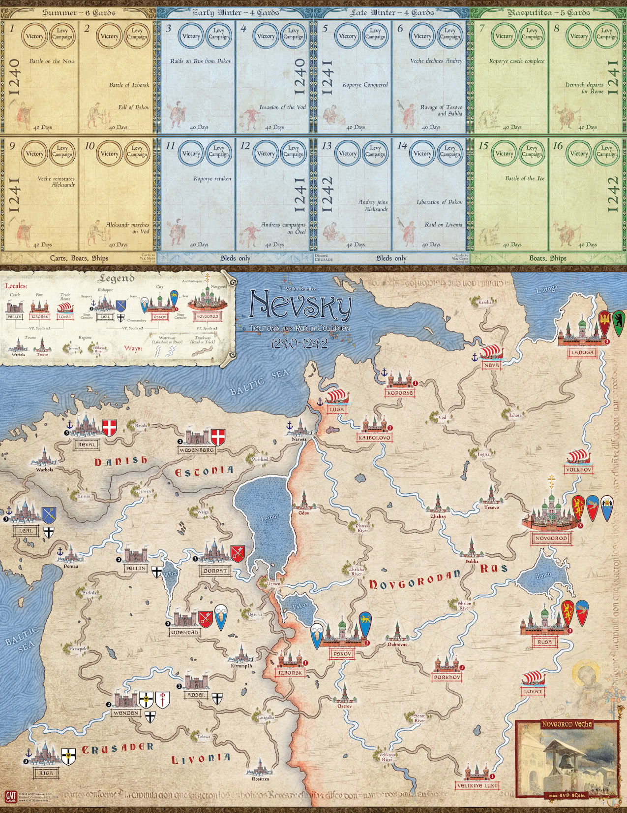
1.3.1 Map
The game board shows a map of the Baltic frontier, circa 1240. It depicts Locales linked by Ways, a Calendar along the top, and a Novgorod Veche (council of nobles) box in one corner.
TERRITORY: The map is divided between Teutonic territory in the west ("Estonia" and "Livonia", bordered in gray) and Russian territory in the east ("Rus", bordered in red). NOTE: In the game, Danish Estonia and Crusader Livonia are both Teutonic territory.
LOCALES: Locales are the spaces on the map that hold Lord cylinders and game markers. Locales include Regions, Towns, Trade Routes, Forts, Castles, Bishoprics, Cities, and Novgorod.
- Conquerable: Framed Locale names—all except Regions and Towns—indicate places important enough to receive "Conquered" victory point (VP, 5.1) markers when the enemy takes them. The borders on the frame show the VP value: one marker if a single border; two markers if City or Bishopric; three if Novgorod (see Strongholds on the foldout). If the original owner retakes a Locale, remove any Conquered markers.
- Strongholds: Novgorod, Cities, Bishoprics, Castles, and Forts can host Lords Withdrawn inside them and can be Besieged and Stormed (4.3.4-.5, 4.5). They show a Siege Capacity (1, 2, or 3) that affects how many Lords they can host and other aspects of Siege and Storm (4.5).
FRIENDLY: Muster (3.4), Pay with Loot (3.2), and a few other game actions require Friendly Locales. A Locale is either Friendly or not Friendly to a side; it is Friendly if and only if:
- It is either in that side's territory (Estonia or Livonia for Teutons, Rus for Russians) or is a Conquered Stronghold in enemy territory, AND
- It is free of the other side's Lords, Unconquered Strongholds, and Conquered markers.
A Locale may be Friendly to neither side.
NOTE: This means that Siege Locales (4.3.5) are never Friendly, nor are any Regions, Towns, or Trade Routes in enemy territory— even if occupied.
EXAMPLES: Vod or Volkhov if empty are Friendly to the Russians because they are in Rus. Neva with a Conquered marker is Friendly to no one. Izborsk if Conquered by Teutons becomes Friendly to the Teutons only, until retaken by the Russians.
SEATS: Some Locales host certain Lords' Seats, as shown by the Lord's Coat of Arms there (1.5.1). Also:
- Pskov: The Russian City of Pskov is a Seat for Yaroslav (a Lord on the Teutonic side) while Conquered by the Teutons.
- Archbishopric: Novgorod bears a cross symbol to show that it serves as an extra Seat for all Russian Lords when the Archbishopric Capability card is in play (1.9.1, 3.4.4); this would mean Novgorod would count as two Seats for Aleksandr, Andrey, and Domash.
- Commanderies: Strongholds with an Order symbol serve as extra Seats for certain Teutonic Lords if the ordensburgen Capability is in play.
SEAPORTS: Locales with an anchor affect Supply (4.6) and Sail (4.7.3).
WAYS: Two types of Ways—Waterways and Trackways—link Locales to one another for March (4.3), Avoid Battle (4.3.4), Retreat (4.4.3), Supply (4.6), the Raiders Capability (1.9.1), and certain Events. Locales connected by either type of Way are adjacent. The type of Way affects which Transport types (1.7.4) can use it in a given Season (2.2.1).
- Waterway connections trace along rivers and along any shore of a lake. NOTE: The Baltic Sea is not a Waterway in the game, but Lords can cross it using a Sail action between Seaports (4.7.3).
- Trackways are overland routes along trade arteries—portages, roads, and tracks.
EXAMPLES: A single Waterway links Narwia to Uzmen, another links Uzmen to Pskov, and another connects Novgorod, Rusa, and Shelon River. Gdov does not block the Waterway along the opposite lakeshore from Narwia to Uzmen. Trackways and Waterways are separate; it would take at least two moves to get from Narwia to Ugaunia, first to Uzmen or Dorpat by Waterway, then on to Ugaunia by Trackway.
ON MAP: The phrases "on the map" and "on map" refer to Lords or markers that are at Locales or, for markers, in the Veche box (1.3.3). EXAMPLE: A Lord cylinder on the Calendar is NOT "on map".
1.3.2 Calendar
A Calendar on the board tracks time and victory scores (2.2). Cylinders there track when Lords are Ready for Muster; markers show when Lords (and, if using an advanced rule, Vassals) must Disband. It shows eight Seasons in two rows, Summer 1240 to Rasputitsa 1242, each Season divided into two 40-Days boxes. It lists reminders about Command cards (4.1), usable Transport (1.7.4), the Crusade card (3.4.2), and exchanging Carts and Sleds (4.9.3).
1.3.3 Novgorod Veche Box
A box at one corner holds Coin and victory point markers of Novgorod's Veche (city council, 1.4.2, 3.5.2), representing the city-state's wealth and independence.
1.4 Higher Authorities
Each side in Nevsky has a civil or religious authority over the Lords who can Levy them and otherwise support their efforts.1.4.1 Papal Legate
The Teutons have a purple Legate pawn and William of Modena Capability card representing an emissary from the Pope to the rulers of the region.
- The Legate is only in play while the William of Modena Capability (1.9.1, 3.4.4) is in effect.
- Teutons put the Legate pawn on the William of Modena card whenever they receive that Capability (3.4.4). During Call to Arms, they may place the pawn at any Bishopric (3.5.1).
- The Legate may March (4.3) or Sail (4.7.3) with any Teutonic Lord.
ENDANGERED: If the Legate is ever with a Teutonic Lord who Avoids Battle, Withdraws, or Retreats (4.3.4, 4.4.3) or is in a Locale with any Russian Lord(s) and no Teutonic Lord, remove the pawn and discard the William of Modena card.
EFFECTS: The Legate once on map can move himself, provide the Teutons a Call to Arms Levy (3.5.1), or add to a Command Rating (4.2) on Campaign—often returning the pawn temporarily to the William of Modena Capability card.
1.4.2 Novgorod Veche
The Russians have a box on the map (1.3.3) representing Novgorod's Veche, the civil authority governing Novgorod.
EFFECTS: The Veche during Call to Arms (3.5.2) can help Muster Lords, give a Lord extra Levy actions, or obtain victory points by declining Aleksandr or Andrey.
WASTAGE: The Veche box can hold at most eight Conquered (victory point) markers and eight Coin; any excess is lost.
CONQUERED: If the Teutons Conquer Novgorod (4.5), remove all Coin from the Veche box; if it was Sacked, add that Coin to Spoils (4.5.2).
NOTE: The Novgorod Veche may continue its Call to Arms even while the Novgorod Locale is Conquered (3.5).
1.5 Lords and Vassals
Cylinders, Service markers, and 5"x5" mats track the status of Lords in Nevsky. Vassals tied to each Lord also have Service markers and add Forces.
1.5.1 Lords
Lords (six on each side) are the figures who carry out military preparations and operations—Levy and Campaign.
CYLINDERS: The game uses cylinders for each Lord to show his location or readiness to Muster. Andrey and Hermann use either of two cylinders each, depending on whether or not they are a Marshal (see below). Any reference to location of a Lord means where his cylinder is—a map Locale, on the Calendar, or out of the game. A cylinder's sticker shows that Lord's Coat of Arms and Command Rating (1.5.3, 4.2).
Russian Lord
Teutonic Lord
COATS OF ARMS: Each Lord has his own shield-shaped Coat of Arms that identifies his cylinder, mat, Vassals, card effects, and so on.
MARSHALS: Each side may have at most one Lord on the map who is a Marshal and better able to lead an army of several Lords together (4.3.1). Aleksandr for the Russians and Andreas for the Teutons are Marshals whenever they are on the map. Andrey and Hermann are Marshals only if the other Marshal on their side is not currently on the map. A ring on a Lord's cylinder shows that he is a Marshal.
Aleksandr (Marshal)
Andreas (Marshal)

Hermann (Marshal, Andreas is not on map)
Hermann (not Marshal, Andreas is on the map)
- When Marching (4.3.1), a Marshal may at the player's discretion bring along any or all of his side's Unbesieged Lords at his Locale with him.
- A Marshal may not be designated as a Lieutenant or as a Lower Lord to a Lieutenant (4.1.3).
SERVICE MARKERS: Each Lord has a Service marker that shows his Coat of Arms, Service Rating (1.5.3), and (except for Aleksandr) Fealty roll. Each Vassal also has such a marker showing the Coat of Arms of the Vassal's Lord, Vassal Forces (1.6), and a Service Rating (1.5.4). A Mustered Lord's Service marker is placed on the Calendar and shifts among 40-Days boxes (2.2.3) to show how much longer that Lord's Service will last. Vassal markers stay on their Lord's Mat or—if playing with the Vassal Service advanced rule—similarly are placed and shift on the Calendar (3.4.2).
Lords
Vassals

SPECIAL VASSALS: Some Vassals require play of certain Capability cards to Muster and to remain in play (3.4.2, 3.4.4); their Service markers' backgrounds distinguish them from other Vassals.
COMMAND CARDS: Each Lord has a set of three Command cards (1.9.2) that enable him to take actions on Campaign (4.2).
DISBANDED: Lords sometimes Disband (3.3). Disband, Battle (4.4), and Storm (4.5.2) can permanently remove Lords from play. Return a Disbanded or removed Lord's Forces and Assets from his Mat to their respective pools (2.1.1) and discard any "This Lord" Capabilities at his mat (1.9.1, 3.4.4). If Disbanded but not permanently removed, his cylinder returns to the Calendar (3.3). If permanently removed, his cylinder, mat, and Service markers are out of the game.
1.5.2 Lord Mats
Each Lord has a 5"x5" mat that shows his characteristics and holds his Forces, Vassals, and Assets. Keep a Lord's mat in an Unused Mats table area (2.1.1) unless Mustered or permanently removed from play. When a Lord is Mustered, move his mat to an area in front of that player; when in Battle or Storm, to a Battle area (4.4.1).
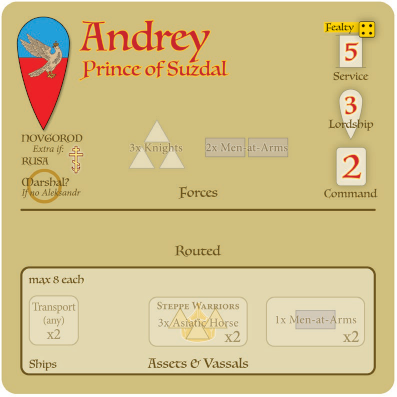
ITEMS ON MATS: When setting up a Lord at start (2.1.2, 6.0) or as Mustered during Levy (3.4.1, 3.5), place his initial Forces, Assets, and available Vassal Service markers onto his mat as noted above. As the Lord Levies his Vassals' Forces or obtains Assets, add those unit pieces and Asset markers to his mat (up to eight of each Asset type, 1.7.3).
MAT SECTIONS: The Lord's starting Forces upon Muster (3.4.1) are shown on the mat at the word Forces; those pieces and any Vassal's Forces and markers that the Lord Musters are placed in the Forces section of the mat.
NOTE: Forces of Vassals do NOT start Mustered (1.5.4). Forces Routed in Battle or Storm (4.4.2, 4.5.2) slide below a line into a Routed section. Starting Assets (3.4.1) and Special or available Vassals are shown in an Assets & Vassals section that holds the Lord's Assets and Vassal Service markers the become or remain available.
RATINGS: A Lord's ratings (1.5.3) are found listed in a column along the upper right of his mat.
CARDS AT MATS: Tuck Arts of War cards that affect specific Lords (1.9.1, 3.1.3, 3.4.4) partly under that Lord's Mat—Events at the top edge and a maximum of two Capabilities at the bottom edge.
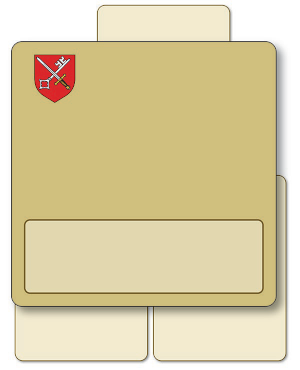
SHARING: Lords may use and spend Assets (1.7) to help one another if at the same Locale. They never Share Vassals, Forces, or This Lord Capabilities. EXAMPLE: A Lord Shares his Carts to speed a group's March or enable Avoid Battle with another Lord whose Provender exceeds Transport (4.3.1-.4).
1.5.3 Ratings
Lord mats list several ratings:
- Fealty: A die-roll range for that Lord's propensity to Muster when another Lord Levies him (3.4.1), shown as a die with the upper number of that range (such as four pips for 1-4). Aleksandr has no Fealty rating because no Lord may Levy him, only the Veche without a roll (3.5.2).
- Service: The number of 40-Days boxes ahead of the current box that the Lord's Service marker or cylinder is placed upon Muster (3.4.1) or Disband (3.3), a numeral in a box symbol.
- Lordship: The number of Levy actions that the Lord takes (3.4), a numeral in a shield symbol.
- Command: The number of actions that the Lord can undertake each time his Command card is revealed during a Campaign (4.2.1), a numeral in a card symbol. This numeral is also on the Lord's cylinder piece and Command cards.
1.5.4 Vassals
Almost all Lords in Nevsky have Vassals (subordinate nobles) who provide their Lords with additional Forces. Like Lords, each Vassal has a Service marker and a Service Rating (the latter used only with an advanced rule, 3.4.2). Vassals have fealty solely to a single Lord, as shown by the Coat of Arms on the Vassal's Service marker. A Lord's Vassals, including the number of them with the same composition of Forces, are shown on his mat in the Assets & Vassals section, to simplify preparation of a mat when Mustering a Lord (1.5.2, 3.4.1). Special Vassals become available only upon play of relevant Capabilities (1.5.1, 3.4.2).
NOTE: Reference sheets display the characteristics of the game's Russian and Teutonic Lords.
1.6 Forces
Nevsky represents military units with wood pieces: wedges for Horse and bars for Foot. Armored units have metallic colors and Unarmored ones are non-metallic. See the Forces foldout page for a listing of unit types, their pieces, and characteristics (4.4.2). Keep spare Forces pieces in a pool such as a bowl (2.1.1).
- If a Lord ever remains Mustered without Forces on his mat, he immediately Disbands as per 3.3.2.
1.7 Assets
Various items that Lords obtain and use—Transport, Provender (food and other supplies), Coin (money), and Loot (livestock and other booty)—are shown by 5/8th-inch counters placed on Lords' mats.
NOTE: Asset markers provided are not a limit on play (but see 1.7.3). In the unlikely case that markers run out, players may represent added Assets with coins or pieces from other games or by placing other unused markers below Asset markers to represent one Asset of that type per stacked marker.
1.7.1 Accounting
Lords may add and expend each type of Asset as if money, making change as needed. Plain markers represent one such Asset each; "x2", "x3", and "x4" markers represent those amounts. Coin in the Veche box (1.3.3) functions similarly.
1.7.2 Greed
Lords may discard (rather than use) Assets only as needed to help them move—to March Laden, March Unladen, Avoid Battle, Retreat, or Sail (4.3.2, 4.3.4, 4.4.3, 4.7.3).
1.7.3 Wastage
A Lord's mat may hold at most eight of each Asset type (eight Sleds, eight Boats, and so on). Any excess is lost.
1.7.4 Usable Transport
Each Transport type is only usable for March (4.3.2), Avoid Battle (4.3.4), Retreat (4.4.3), Supply actions (4.6), and Sail (4.7.3) during certain Seasons (as noted on the Calendar) and along certain map features (as listed on the Commands page of the foldout):
-
Boats and Ships are usable in Rasputitsa and Summer. Boats
are usable on Waterways. Ships are usable at Seaports and, by
Russians, at Novgorod for Supply (4.6.3).
REMINDER: The term Waterway includes rivers and lakeshores but not the Baltic Sea.
- Only Sleds are usable in Winter, and Sleds are usable only in Winter. They can be used on all Ways.
- Carts are usable only in Summer and only on Trackways. Sleds and Carts automatically convert into the other type at the end of Summer and Late Winter, with losses (4.9.3). Unusable Transport otherwise remains with its Lord for future use.
NOTE: Transport helps Lords acquire and move Provender (4.6, 4.3) and Sail (4.7.3); Lords themselves otherwise can move without Transport.
1.8 Other Markers
Variously shaped game counters include:
- Round markers to track time (2.2.2) and victory (2.2.5, 5.1, 6.0 Pleskau scenario) on the Calendar and mark Battle and Storm Locales (4.4.1-.2).
- 5/8th-inch square Conquered 1VP for Conquerable Locales (1.3.1) taken from the enemy (4.3-4.5) and for Veche Box (3.4.2) victory points (5.1).
- Siege markers to put at Besieged Strongholds and to show Siegeworks in Storm or Sally (1.3.1, 4.5).
- Moved/Fought markers to put on Lord cylinders during Commands (4.3, 4.4.5), with Supply Source reminder markers on the back (4.6.1).
- Six numbered markers to help log actions, combat rounds, altered ratings, and such.
- Square Walls and rectangular Castle and Sea Trade Blocked markers used with Stone Kremlin, Stonemasons, and Baltic and Black Sea Trade Capabilities, respectively (1.9.1).
Several ½-inch square counters include:
1.9 Cards
The game has two types of cards: Arts of War cards with Events and Capabilities (below), and Command cards that give Lords Campaign actions.
1.9.1 Arts of War
Each side has its own deck of Arts of War cards. Each Arts of War card is divided into an upper Event section and lower Capability section. Only one of the two sections may be in effect at a time.
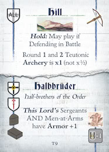
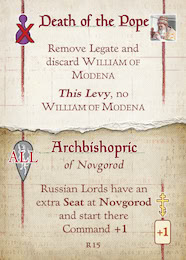
Event: Hill (fleeting, 3.1.3)
Capability: Archbishopric (lasting, 3.4.4)
EVENTS: The upper Event section provides players immediate and/or temporary benefits or opportunities. Players draw two Arts of War cards for their Events at the outset of each Levy after the first (3.1). NOTE: For the use of Events, see 3.1.3.
CAPABILITIES: Lower sections on the cards show Capabilities that players can get for longer-lasting benefits. These are either drawn randomly during initial Levy (3.1) or are selected by the player (3.4.4). Coats of Arms show which Lords may Levy and use the Capability. Some cards say "This Lord" and attach to individual Lords; a few of these are duplicates, and no Lord may have more than one of that Capability. Capabilities remain in effect unless discarded under certain conditions (Disbanding Lord 3.3, Capability Discard 4.0, Reset 4.9.5).
PLAY NOTE: Since Events and Capabilities are on the same cards, the draw of an Event might delay Levy of that card's Capability; likewise, an Event on a Capability in play cannot be drawn (3.1.3, 3.4.4).
NO EVENT/NO CAPABILITY: Three cards in each Arts of War deck yield no effect if drawn (3.1).
CARD USE: Whenever text on a card contradicts these rules, card text takes precedence. The player of an Event or owner of a Capability decides how to implement card text within what is specified.
CAPABILITY MARKERS: Teutonic Stonemasons and Russian Stone Kremlin Capabilities enable that side to place Castle and Walls +1 markers, respectively, onto the map, no more than one per Locale. Castle markers change their Locale from Fort or Town into a Castle (removing Walls +1 and leaving any other markers there), add to Victory, and can flip to enemy possession but not be removed. A Walls +1 marker adds to a Stronghold's protection against Storm and is removed if Sacked. Place a Sea Trade Blocked marker on Russian Baltic and Black Sea Trade Capability cards when the Teutons block the effect as noted on the card.
1.9.2 Command Cards
Each side has a set of three Command cards for each Lord and three Pass cards. Players build their Campaign Plan deck each Campaign by stacking Command cards of their Mustered Lords plus Pass cards as needed (4.1).
PASS CARDS: Each side has three Pass Command cards to fill out a Campaign Plan deck when too few Lords are Mustered to do so with their cards.
2.0 SETUP AND CALENDAR
This section explains the game's general sequence and use of the Calendar track.
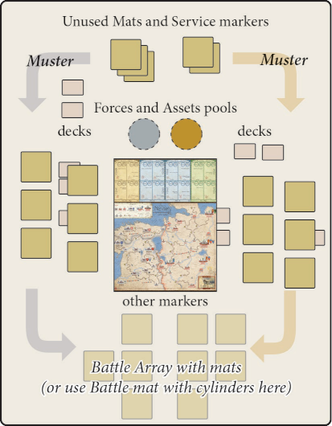
Sample layout with square or round table and no Hidden
Mats Option (1.5.2).
Sample layout with wide but shallow table and
using Hidden Mats Option (1.5.2).
2.1 Setup
2.1.1 Lay out
Seat players and set the game board between them. You will want enough table space on all sides of the board for mats, cards, and Forces and marker pools. See the 2-player layouts shown here and tips for solitaire play in the Background booklet.
MATS AND SERVICE MARKERS: Keep unused Lord mats, Service markers, and the Battle mat to one side (1.5.1-1.5.2, 4.4.1).
POOLS: Keep all Forces pieces (the game's wooden bits other than Lord cylinders and Legate pawn) in a convenient place nearby. We suggest separate pools for Assets (Transport, Coin, Provender, and Loot, 1.7) and for remaining markers (1.8) to speed play.
DECKS: Separate the playing cards into four decks—Russian and Teutonic Arts of War and Russian and Teutonic Command (1.9).
OTHER ITEMS: Give each player a play aid foldout. Keep Lord cylinders, Legate pawn, other reference sheets, the background booklet, and this rules book handy. If using the Hidden Mats option (1.5.2), each player gets one screen.
2.1.2 Scenarios
Choose a scenario (6.0). Agree on whether to use screens for Hidden Mats (1.5.2), advanced Vassal Service (3.4.2), and/or No Horseback Archery (6.0) options. Set up the situation and begin play with the first Levy (3.0).
2.2 Calendar
The Calendar (1.3.2) tracks time and victory.
2.2.1 Seasons
Each Scenario covers one or more Seasons— Summer, Early Winter, Late Winter, and Rasputitsa. Each Season comprises two 40-Day periods. Each 40-Days period has a Levy sequence, then a Campaign sequence.
- Conduct each Levy and Campaign as detailed respectively in rules sections 3 and 4 below and summarized on the Sequence of Play foldout page.
2.2.2 Marking Time
The round Levy/Campaign marker tracks the progress of Seasons and the 40-Day Levy and Campaigns within each. Mark that it is Levy or Campaign by placing the marker with that side up in the appropriate Levy or Campaign circle in the current 40-Days box on the Calendar.
2.2.3 Marking Service
Place and shift Service markers and Lord cylinders in the Calendar's 40 Days boxes as described under the Levy rules (3.2-3.5) or on Event cards (1.9.1, 3.1.3). All instructions to shift right or left mean that number of 40-Days boxes. If a direction is not specified, the executing player chooses. EXAMPLE: "Shift 1 right" from box 8 means to box 9, "1 left" from 9 means to 8.
- If a Service marker or Lord's cylinder would be placed or shifted below (left of) box 1 or beyond (right of) box 16, set the marker or cylinder just off the board on the corresponding side: ignore further shifts in that direction. The first shift back toward the Calendar places the marker into box 1 or box 16, respectively. NOTE: This avoids some "end of the world" anomalies.
2.2.4 Player Order
Unless noted otherwise, the Teutons go first and the Russians second in each step of Levy and Campaign. EXAMPLE: During Disband Beyond Service Limit step (3.3.1), the Teutonic player Disbands Lords, then the Russians do so.
EXCEPTIONS:
- Play of Command cards alternates, one Teutonic card, then one Russian card, then another Teutonic card, and so on (4.2).
- The order of many steps in Battle, Siege, and Storm will depend on who is Active, Attacking, has Archery or Cavalry, and so on (4.4, 4.5.2).
2.2.5 Tracking Victory Points
The Calendar's numbered 40-Days boxes also serve to track victory scores (5.1), using round Victory markers. Place each side's Victory marker (on the +½ side as appropriate) in the Victory circle at the 40 Days box number corresponding to that side's current victory score between 1 and 16½; or off the Calendar left of 1 for zero or ½ or right of 16 for 17 or 17½. A side may never exceed a score of 17½; any excess points earned are forfeit.
3.0 LEVY
At the outset of each 40 Days, players set the scene for the campaign to follow by adding forces and assets. See the Sequence of Play play aid.
3.1 Arts of War
Each side first draws two random Arts of War cards as Capabilities or Events as follows.
3.1.1 Shuffle
Collect and shuffle all unused Teutonic Arts of War cards into an Event draw deck; do the same for the Russian player. Always include each side's three No Event/No Capability cards. Held Events (3.1.3) and Capability cards in play (3.4.4) are not included in the draw deck.
3.1.2 Draw Capabilities
If it is the Levy for the scenario's first 40 Days, the Teutonic player then the Russian player (2.2.4) each randomly draws two Arts of War cards from the player's own deck and deploys them as Capabilities (lower half of the card, 1.9.1) at that side's map edge or Lord mats (3.4.4).
- Remove from play any No Capability card drawn.
- Any No Capability card and any This Lord card that cannot be assigned (3.4.2) to a Lord who is Mustered adds no Capability.
3.1.3 Draw Events
If it is the second or any later Levy, the Teutonic then the Russian player each draws and implements two cards' Events in the order drawn (the upper half of each card, 1.9.1).
Except as specified below, reveal Events immediately and return the revealed cards to the deck after this Events segment.
- Remove from play any No Event card drawn.
-
Events with "This Levy" and "This Campaign" (in bold-italic)
are in effect for
the entire ensuing Levy or Campaign, respectively, and are
NOT returned to their deck until the end of both sides' Levy or
Campaign activities. (Yes, that means that the Capability on the
bottom half of such a card will not be available for selection this
Levy.)
- Players keep all drawn "Hold" Events hidden for later use. When played on a specific Lord, tuck the card under the top edge of that Lord's mat, so that the Event text shows.
NOTE: The Pleskau short scenario does not use No Event cards, and the Crusade on Novgorod full scenario does not remove them (6.0).
3.1.4 Greed
Players may not discard (as opposed to use) cards unless permitted by a rule. EXAMPLE: Hold Events only return to their deck once used per the text on the card or if selected for discard at the end of a Campaign (4.9.5).
NOTE: A side's Events can affect the opposing side. The side playing an Event card makes any decisions allowed unless otherwise specified.
3.2 Pay
After drawing cards, the Teutonic then the Russian player may expend Coin and Loot to encourage their Lords and Vassals to remain in the field longer. Coin and Loot markers may be removed in this step only so as to actually shift Service markers (1.7.2).
3.2.1 Pay with Coin
Any Lords with Coin markers on their mat may remove some or all of their Coin to affect their own or other Lords' Service. Russians may also pay using Veche Coin (1.4.2). Each Coin spent shifts a single Service marker right on the Calendar by one 40-Days box, either:
- The paying Lord's own Service marker, OR
- The Service marker of another Lord at the same Locale, OR
- If Coin from the Novgorod Veche box, the Service of any one Russian Lord who is not Besieged.
3.2.2 Pay with Loot
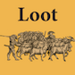
Players may have any of their Lords who are in a Friendly Locale (1.3.1) remove some or all of any Loot markers on their mat to shift their own Service marker or those of Lords in the same Locale. Shift one marker right by one 40-Days box for each Loot removed.
3.3 Disband
The Teutonic then the Russian player may then have to remove certain Lords from play because of the position of that Lord's Service marker on the Calendar (1.5.1, 2.2).3.3.1 Beyond Service Limit
Lords whose Service markers are to the left of (in a lower-numbered 40-Days box than) the Levy marker are permanently removed from the game.
- For a removed Lord, return all Forces and Assets from his mat to those pools.
- Return any "This Lord" Capability cards (3.4.4) at that Lord's mat to that side's Arts of War deck.
- Remove his cylinder(s), Service markers, and mat from the game.
3.3.2 At Service Limit
Lords with Service markers in the same 40-Days box as the Levy or Campaign marker must Disband but may Muster again in a later Levy.
- Place such a Lord's cylinder onto the Calendar (even if under Siege, 4.3.5), a number of 40-Days boxes to the right of the current box if Levy, or next box if Campaign (4.8.2), equal to that Lord's Service Rating (1.5.3).
- Return his Forces and Assets to their pools and discard cards at his mat. Move his mat, Service marker, and remaining Vassal Service markers to the Unused area for possible future Muster.
NOTE: Besieged Lords (4.3.5) Disband normally. In rare cases, a Lord may Disband as above because his last unit is removed outside of combat (1.6).
3.4 Muster
After any Disband, Teutonic then Russian Lords may take Levy actions up to their Lordship Rating (1.5.3) to Muster other Lords, Vassals, Transport, or Capabilities. Each Levy action spends one point of a Lord's Lordship rating. A Lord must begin Muster in a Friendly Locale to take Levy actions (that means Lords who are brought onto the map during this segment may NOT do so). Each Lord completes his actions before the next Lord, in any order desired.
3.4.1 Levy Lords to Muster
A Lord at a Friendly Locale may use a Levy action (expend one point of his Lordship) to enable another Lord to roll for Muster. The rolling Lord must be Ready (cylinder in a 40-Days box at or left of the Levy marker, 2.2) and must have a Seat free (see below). If a Muster roll fails, the Levying Lord may take added Levy actions (within the limits of his Lordship) to keep trying to Muster the same Lord. EXCEPTION: No Lord may Muster Aleksandr.
PROCEDURE: Designate a Ready Lord to be Mustered. Roll one die—if the roll is within that Lord's Fealty Rating (1.5.3), do the following; if not, do nothing.
- Place that Lord's cylinder at one of his Seats (1.3.1) free of enemy Lords and not Conquered by the enemy. NOTE: For the Teutons to Muster Yaroslav at Pskov, they must have black Conquered markers there (1.3.1).
- Place that Lord's mat in front of the player.
- Place the Lord's starting Forces, Assets (selecting desired Transport type where "any" or "no Ship" are indicated), and available Vassal Service markers (Coat of Arms up, Ready to Muster, 3.4.2) onto the Lord's mat—all as shown on the mat. Keep aside any Special Vassals that are not available because the corresponding Capability is not in effect (Steppe Warriors and Crusade, 1.5.1, 3.4.4). Remember that Forces associated with Vassals are not placed on the Lord's mat when the Lord Musters; they are available for the Lord to Levy at a later time (3.4.2).
- Place the Lord's own Service marker into a 40-Days box on the Calendar, a number of boxes equal to his Service Rating to the right (ahead) of current box (where the Levy marker is; if beyond 16, then just off the game board, 2.2.3).
EXAMPLE: A Lord with Service [3] Mustering in Summer 1241 (Levy marker in box 9) would place his Service marker three ahead into 40-Days box 12.
3.4.2 Levy to Muster Ready Vassals
A Lord at a Friendly Locale may use one Levy action to Muster one of his Vassals that has a face-up Service marker in the Assets & Vassals section of his mat (1.5.2).
PROCEDURE: When a Vassal Musters, slide its Service marker on its Lord's mat up into the Forces section. Place the Forces illustrated on the Vassal's marker from the Force pool near or on the marker.
PLAY NOTE: Keep Vassal Service markers in their mats' Forces or Routed sections if the units are removed (4.4.4), showing that these Vassals Mustered earlier and are not available.
NOTE: Ignore the ratings on Vassal Service markers unless using the advanced rule below. Combat loss of Vassal units (4.4.4) leaves the Vassal marker in place; it does not Disband the Vassal.
SPECIAL VASSALS: Keep these distinctively marked Service markers set aside. When the relevant Capability is Levied (3.4.4), add those markers to their Lords' mats if and whenever that Lord is Mustered; should that card be discarded, immediately Disband those Vassal Forces. Mongols and Kipchaqs may not Muster or remain in Service unless the Steppe Warriors Capability is in play. Summer Crusaders Muster only if Crusade is in play and only in Summer, and do so automatically, for free; they may Serve into Early Winter.
3.4.3 Levy Transport
A Lord at a Friendly Locale may use one Levy action to add one Transport to his mat: a Boat, a Cart, a Sled, or—only if his mat says "Ships"—a Ship, up to eight per type.
3.4.4 Levy Capabilities
A Lord at a Friendly Locale may obtain Capabilities (an Arts of War card's bottom half), either for himself or for his entire side (per card text, 1.9.1), at a cost of one Levy action per card selected. Select from any of the side's currently unused cards, within these restrictions:
- The (lower) Capability section of each Arts of War card shows the Coats of Arms of those Lords who can Levy that Capability and whom it affects, including "any", "ALL", or "NOT".
- Certain Capabilities refer to"This Lord" . Such Capabilities when Levied will affect only the Lord who Levied it. Place the card at the bottom edge of that Lord's mat, with the upper half of the card (the card's Event) tucked out of view underneath the mat as shown in 1.5.2. A Lord may have at most two "This Lord" Capabilities at a time—the owning player must immediately discard any excess. A Lord may not have two of the same named Capability (such as T7 and T15, both Warrior Monks.).
- Other Capabilities do not say "This Lord" and affect more than a single Lord. Tuck such cards' upper half under the player's closest game board edge as shown in table layout (2.1.1). A Lord may Levy any number of such Capabilities.
3.5 Call to Arms
After Lords already in the field Levy their armies, each side's higher religious or civil authorities (1.4) may help mobilize even more strength for war, Teutonic player first.
3.5.1 Papal Legate
The Teutonic player performs the following in this order, possibly placing and then using the Legate.
INDISPOSED: If the William of Modena Capability is not in effect (1.9.1, 3.4.4), the Teutonic player skips Call to Arms.
ARRIVES: If the Legate pawn begins Call to Arms on the William of Modena card, the Teutonic player may place the pawn at any Bishopric. ACTIVE: If William of Modena is in effect and once the Legate pawn is on the map, the Teutonic player may as desired use the Legate during Call to Arms to either:
- Move the pawn to any Friendly Locale (1.3.1), OR
-
Use the Legate to do one of the following three things and remove
the pawn to the William of Modena card when finished—
- If at the Seat of a Ready Lord, Muster that Lord there (3.4.1) without having to roll, OR
- If at the Seat of a Lord on the Calendar, slide the Lord's cylinder by one box left, OR
- If at a Friendly Locale with a Lord, enable that Lord to undertake an immediate extra Muster using his full Lordship Rating (3.4).
NOTE: During Campaign, the Legate if on the map can move with Lords and can be used to provide a co-located Lord an extra Command action (4.2).
3.5.2 Novgorod Veche
Next the Russian player may undertake one action with the Veche (even if Novgorod is Conquered by the Teutons). The Russian player may either do nothing or do one of the following things:
- Remove one 1VP Conquered marker from the Novgorod Veche box (adjust white Victory on Calendar) to slide one Lord cylinder on the Calendar by two boxes left, OR
- Remove one 1VP marker from the box to automatically Levy one Ready Russian Lord (3.4.1, without having to roll), OR
- Remove one 1VP marker from the box to enable one Russian Lord at any Friendly Locale (so not at a Siege) to undertake an immediate extra Muster using his Lordship (3.4), OR
- Slide Aleksandr and/or Andrey's cylinder(s) on the Calendar from Ready (3.4.1, at or left of current Levy) to one box right of current Levy. If both are Ready, slide BOTH cylinders. Add one white 1VP Conquered marker total to the Veche box (remember, the Veche can hold a maximum of eight VP, 1.4.2).
EXAMPLE: It is Call to Arms of 40-Days box 7; Andrey and Aleksandr are in box 5. The Russian player per the last bullet above declines both Lords, sliding their cylinders to box 8 and adding a 1VP Conquered marker to the Veche box.
NOTE: Only the Veche Levies Aleksandr (3.4.1).
3.5.3 Discard Events
With Levy over, both sides discard Events applying only to "This Levy" (3.1.3).
4.0 CAMPAIGN
After Levy, players conduct that 40 Days' Campaign. Complete the steps below, then proceed to the next 40 Days' Levy (3.0). The Sequence of Play page of the foldout summarizes the Campaign steps.
CAPABILITY DISCARD: The players (Teutonic first) must select and discard any Capability cards they have in excess of their number of Mustered Lords—not including any "This Lord" Capabilities (3.4.4). Compare the number of cards tucked under a side's map edge to its number of Lord mats in use—the player must discard any excess.
CAMPAIGN STEPS:
- Plan: The two sides simultaneously build their Campaign Plans—an ordered stack of Command cards—and may designate Lieutenants to lead other Lords (4.1.3).
-
Command Activation: Starting with the Teutonic player,
one side flips its top Command card and executes (if desired)
Command actions (4.2-4.7) by the Lord on that card or Passes
back to the other side if a Pass card.
- Actions: One side is Active, using actions to execute Commands; the other side is Inactive.
- Feed/Pay/Disband: At the end of each card, both sides Feed Forces of Lords who are marked as Moved or Fought, may Pay those Lords, then check whether they Disband (4.8).
- More Command Activations: The Russian player next flips the top Russian card and executes a Russian Command Activation as above (actions, Feed). Players continue to alternate Command Activations until the Plan stacks are exhausted.
- End Campaign: After both Plan stacks are exhausted and Command Activations finished, the Campaign ends. Players reset as listed at 4.9, advance the Campaign marker to the next 40-days box, and flip it to Levy. If at the end of the scenario, end play and check for victory (5.0).
4.1 Plan
During the Plan step, players simultaneously build a stack of facedown Commands cards (1.9.2) for their side called a Plan. Players may always inspect their own Plan and their opponent's played Command cards (but not unused ones). The number of cards in each Plan stack must equal the following, depending on the current Season (and as noted on the Calendar):
- Early Winter or Late Winter: 4 Command cards.
- Rasputitsa: 5 Command cards.
- Summer: 6 Command cards.
4.1.1 Selecting Cards
A side may select from among any of their currently Mustered Lords' Command cards for the Plan. If a side does not have enough Lords Mustered to fill out the above total, it must use Pass cards (1.9.2) to build a stack of that number of Command cards. NOTE: Each Lord has three Command cards (1.9.2) and so could become Active up to three times in a single Campaign.
4.1.2 Arranging Stacks
Each side builds its Plan for the coming Campaign by arranging its four-to-six selected Command cards in any order desired, face down. The top face-down card will be that side's first Active Lord, and so on. Set remaining Command cards aside for now, also face down. Players may not rearrange Plan stacks once built.
4.1.3 Lieutenants
During Planning (only), players may put a Lord cylinder of their side on top of one other cylinder at the same Locale. The upper Lord is a Lieutenant, overseeing the Lower Lord for the entire Campaign, barring removal of either. A Lieutenant may have only one Lower Lord at a time; the Lower Lord may not be a Lieutenant. Neither Lord may currently be a Marshal (1.5.1) or be under Siege (4.5.1). A side may have several Lieutenants.
- A Lieutenant and his Lower Lord always move together in March, Retreat, and so on (4.3, 4.4.3) as if the Lieutenant were a Marshal (1.5.1).
- If a Lieutenant or his Lower Lord is Disbanded or removed from play while the other is not, the remaining Lord becomes a normal Lord.
- Revealing a Lower Lord's Command card results in a Pass (4.2.3).
4.2 Command
After building Plan stacks, Teutonic then Russian sides alternate flipping (revealing) the top current Command card of their stack— one Teutonic card, then one Russian card, and so on. After revealing a Command card, a side takes actions with the Lord shown on that card or, in some cases, Passes (4.2.3).
LEGATE: Whenever a Teutonic Lord starts his Activation in the same Locale as the Legate pawn, the Teutonic player may add +1 to that Lord's Command Rating for the current card. Remove the pawn to the William of Modena card if and when the Lord uses the extra action.
4.2.1 Activation
Each Lord may execute a series of Commands of the owning player's choice, in any order, using actions numbering up to that Lord's Command Rating (1.5.3). EXCEPTIONS: Besieged Lords (4.3.5) may only Sally (4.5.3), use stone Kremlin Capability (1.9.1), or Pass (4.7.5). Some March uses two actions (4.3.2). Siege, Sail, and Tax take an entire card's actions (4.5.1, 4.7.3, 4.7.4). Starting a Siege and combat end actions on that card (4.3.5, 4.4.5, 4.5.2).
NOTE: Lords may use multiple actions on a single type of Command, for example, three actions to Forage (4.7) three times. After each Command card, Lords who moved or fought will Feed their Forces and Lords may Pay or Disband (4.8).
4.2.2 Command Menu
Lords select from a menu of Command actions summarized on the Commands foldout page and detailed below. With various restrictions, the menu includes March (with possible Battle), Siege, Storm, Sally, Supply, Forage, Ravage, Sail, Tax, and Pass (4.3-4.7). Certain Capability cards (1.9.1) affect or add to Commands.
4.2.3 Pass Card
Upon revealing a Pass card, a Lower Lord's card (4.1.3), or the card of a Lord not on the map, that side does nothing; play instead passes to the other side or ends the Campaign if neither side has cards left in its Plan (4.9).
4.3 March
An Unbesieged (4.3.5) Lord may expend a Command action (two if Laden, 4.3.2) to March to another Locale.
MOVED/FOUGHT: Upon any movement during March, put a Moved/Fought marker on or next to each moving Lord's cylinder (or mat, as desired) that does not yet have one.
4.3.1 Group March
Any or all of a side's Unbesieged Lords in the same Locale with its Marshal may March with the Marshal (1.5.1). The Lord beneath a Marching Lieutenant (4.1.3) must move with the Lieutenant. The Legate may move along with any co-located Teutonic Lord (1.4.1).
4.3.2 Laden
Provender and Loot can hinder March, Avoid Battle (4.3.4), and Retreat (4.4.3).
- Lords with more than twice as much Provender as Transport that is usable for the current Season and along the Way that the Lord is to move may not move unless they discard the excess (1.7, 1.7.4).
- A Lord with any Loot or more Provender than usable Transport but not more than twice as much is Laden for that move (see below).
SHARED TRANSPORT: Lords moving as a group (4.3.1, 4.3.4, 4.4.3, 4.7.3) Share Transport (1.5.2). Count all Provender and usable Transport of Lords moving together to determine Laden status.
LADEN MARCH: March while any Lord involved is Laden requires and expends two Command actions per adjacent Locale instead of just one, prohibiting March by a Lord who has only one action left.
NOTE: Remember, Lords may discard Loot and/or Provender to facilitate March (1.7.2).
4.3.3 March Adjacent
An Unbesieged Lord taking an action—two actions if Laden—to March moves to an adjacent Locale via a single connecting Waterway or Trackway, regardless of Transport.
4.3.4 Approach
If a Marching Lord enters the Locale of an Unbesieged enemy Lord, check immediately for Avoid Battle (retreating to an adjacent Locale), Withdrawal (into a Stronghold there), Battle, and Siege as follows.
AVOID BATTLE: Upon enemy Approach, some or all Inactive Lords may move to one or more adjacent Locales, within these restrictions—
- Lords may not Avoid Battle across any part of the Way that the enemy used to Approach the Locale.
- Lords may not Avoid Battle to any Locale with an Unbesieged enemy Lord or Stronghold.
- Lords may only Avoid Battle Unladen (4.3.2). They may take no Loot and take only Provender equal to their own or shared Transport that is usable on the Way across which they are moving.
- Lords may discard their Loot and any Provender as needed to become Unladen and thereby Avoid Battle (1.7.2). The Approaching enemy Lords receive and divide among them any Loot and Provender so discarded (as if Spoils, 4.4.3).
Mark Avoiding Lords as Moved/Fought (4.3).
NOTE: Lords never Avoid via Seaport (4.7.3).
WITHDRAW: Upon Approach or after Battle (4.4.3), the Inactive side may Withdraw some or all Lords into its Stronghold there, a number of Lords up to Siege Capacity (1.3.1). NOTE: Withdrawal alone does not mark Lords as Moved/Fought.
LEGATE: If the Legate is alone with a Russian Lord or is with a Teutonic Lord who Avoids Battle or Withdraws, remove the pawn and discard William of Modena (1.4.1).
BATTLE: Unless all enemy Lords there either Avoid Battle or Withdraw, conduct a Battle immediately with the Marching side as Attacker (4.4), as part of that March Command.
4.3.5 Besiege
Whenever a side has Lord(s) in a Locale outside a currently Unbesieged enemy Stronghold and no enemy Lords are present outside the Stronghold, mark the Locale with one Siege marker of that side's color. If all Besieging Lords later depart, remove all Siege markers.
ENCAMP: After Besieging an Unbesieged enemy Stronghold, skip any remaining actions on this Command card; go to Feed/ Pay/Disband (4.8).
4.3.6 Conquer
Teutonic Lords at a Trade Route where no enemy and no black Conquered marker place one, Russian Lords remove any Conquered marker there (1.3.1, adjust VP, 2.2.5).
4.4 Battle
When a side Marches into a Locale with at least one Unbesieged enemy Lord and the enemy does not Avoid Battle or Withdraw, a Battle ensues. All Lords in the Locale not under Siege (4.3.5) must participate in the Battle. The Battle and Storm chart summarizes the rules below. NOTE: Storm of a Stronghold (4.5.2) follows similar but distinct rules from field Battle.
MARKER: To remember where Lords are fighting, mark the Battle or Storm Locale with the Battle/Storm marker.
4.4.1 Battle Array
Players Array their participating Lords—either their Lords' cylinders on the Battle mat or Lord mats on the table, as players prefer.
- Attackers position their Lords, then Defenders do.
- A side must as able have a Lord each in up to three possible Front positions: left, center, and right. Other Lords start in Reserve.
- The Active Lord must start at Front center. The Attackers then fill in Front left and/or right positions with one other Lord present each, if any, and put any remaining Lords in Reserve.
- The Defender must put one Lord directly opposite each Front Attacking Lord, first in the center, then left and/or right, as able.
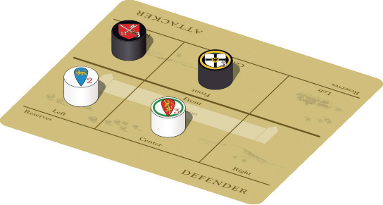
Battle mat with Lord cylinders in Array.
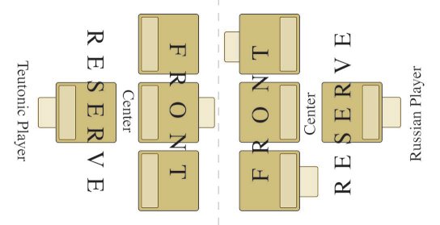
Battle Array using Lord mats.
EVENTS: Attacking then Defending sides then may play applicable Held Events (3.1.3) as desired.
RELIEF SALLY: When a side Approaches (4.3.4) a Locale where it is also Besieged, any Besieged Lords may join any Attack for no added Command actions. Array Sallying Attackers in a row as above but behind the Defenders. Any Defending Lords in Reserve instead position as above opposite Sallying Attackers to fight them as a Rearguard row. If no Rearguard, Sallying Lords fight Front Defenders as if Flanking them all equally closely (4.4.2). Siegeworks (4.5.3) protect against Strikes by Sallying Attackers only (round separately). If the Attackers lose, Withdraw Sallying Lords back into the Stronghold (4.4.3) and reduce Siege markers there to one (4.5.3).
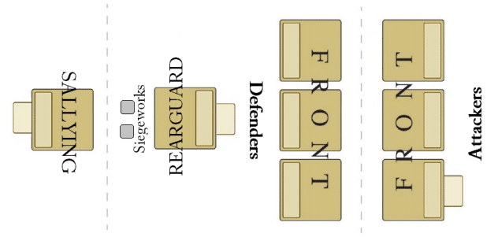
Relief Sally Array
4.4.2 Rounds
Once Arrayed, a Battle continues Round after Round, until a side Concedes or all its Lords Rout. A Round of Battle will go through the steps below in this order: Concede?, Reposition, Strike. Within each Strike step, determine Hits, then Protection, then Rout. See the Battle and Storm chart of the play aid. NOTE: Some Event effects on Battle vary by Round.
CONCEDE THE FIELD? At the start of each Battle Round, the Attacker then the Defender may declare that the Battle will end after this Round with that side as the loser but with diminished losses (4.4.3-.4). NOTE: Battles last at least one Round.
- This Round, the enemy gains a Pursuit advantage against the Conceding side's Hits (see below).
- Place the Pursuit marker between the two sides, pointing from the Pursuing to the Conceding side.
REPOSITION: Then, in each Round after the first, both sides reposition Lords as follows (in this order).
-
Rout. Remove Routed Lords from the Battle Array. They
participate no further until Ending the Battle (4.4.3).
- Adjust Rows. If Relief Sally (4.4.1) and all of any row Routed, advance or reface rows: if no Sallying Lords remain, Rearguard becomes Reserve; if no Rearguard, Sallying Lords Flank Defenders; if no Front Defenders, Rearguard faces about as Front; if no Front Attackers, Rearguard becomes Front against Sally (4.5.3) and original Front Defenders face about as Reserve.
- Advance Lords. Attacker then Defender slide any Unrouted Lords in Reserve into any empty Front positions (one each).
- Center. If a center position remains empty, first the Attacker then the Defender must select and slide one of that side's Lords from either left or right to fill its empty center position.
- Adjust Rows. If Relief Sally (4.4.1) and all of any row Routed, advance or reface rows: if no Sallying Lords remain, Rearguard becomes Reserve; if no Rearguard, Sallying Lords Flank Defenders; if no Front Defenders, Rearguard faces about as Front; if no Front Attackers, Rearguard becomes Front against Sally (4.5.3) and original Front Defenders face about as Reserve.
- Flanking. Whenever a Lord facing an enemy row has no enemy Lord directly opposite, he Flanks and Strikes the closest enemy Lord in that row. Center Flanks left and right and chooses one to strike. Total all Hits from Flanking Lords plus the directly opposed Lord, then round up. A Flanking Lord may absorb Hits from a Lord he Flanks if no enemies Flank the target Lord.
-
Initiative. Lords Strike step by step in the order show below; each
letter designates a separate step.
Within each step, Striking Lords choose the order of Strike, Lord by Lord (or Lord with Flanking Lord[s]). Then any Flanking Lords choose
whether to absorb Strikes before opposed Lords.
Resolve all Hits, Protection rolls,
and Rout before Striking in the next step, not simultaneously.
EXAMPLE: Attackers take Hits from Defending Archery before Attacking Archers Strike.
-
Archery steps
- Defending Archery
- Attacking Archery
-
Melee steps
- Defending Horse
- Attacking Horse
- Defending Foot
- Attacking Foot
-
Archery steps
TOTAL HITS: Each unit causes ½, 1, or 2 Hits, depending on Forces and Strike type—see the Forces table. Total all Hits for that step, including Flanking plus directly opposing Lords, rounding up. NOTE: You do not roll to generate Hits - they generate automatically based on the Forces Striking.
- Pursuit. The Conceding side halves its total Hits against the Pursuing side. Round all fractions up by step.
APPLY HITS TO LORDS: Hits apply to the Forces of the opposed, Flanked, or Flanking enemy Lord. A Player with a Flanking Lord where no enemies are Flanking the target selects either the Flanking or directly opposed Lord to take Hits. Whenever a Lord Routs to create a new Flanking situation, apply remaining Hits accordingly.
PROTECTION: Strongholds, Siegeworks, various cards, and most Forces types give saving rolls that can nullify Hits—Walls, Armor, Evade, and Unarmored Protection. See the Forces and Strongholds tables. Events and Capabilities (1.9.1) can change these die-roll ranges by adding to or subtracting from the top number of the range. See also the No Horseback Archery variant, 6.0.
EXAMPLES: A "+1" to Armor would improve a 1-3 Armor die-roll range to 1-4. A "-1" to Walls would nullify a single Siegeworks marker (4.5.2).
- Russian Archery. When Russian Archery that reduces enemy Armor Protection (from Garrisons, 4.5.2, or streltsy, 1.9.1, 3.4.4) combines with other Archery, round up any ½ Hits that cause the reduction. EXAMPLE: Three Streltsy Men-at-Arms and three Asiatic Horse would yield a total of three Hits, of which two cause -2 Armor.
ROLL WALLS: If this is a Storm or Sally (4.5.2-.3) or as provided by Event (1.9.1, 3.1.3), a Lord benefiting from any Walls or Siege markers first rolls dice equal to the total number of Hits just received in that step before assigning any Hits to his units. Each roll within the Walls range specified (for example, "1-2") or less than or equal to the total Siege markers cancels one of those Hits.
ASSIGN HITS TO UNITS: After rolling for any Walls, the owner selects which unit will absorb each Hit, Hit by Hit. Each Hit causes a Protection die roll and Routs that unit if it fails the roll, or automatically Routs a Serf unit.
ROLL BY HIT: Units roll Protection as follows.
- Armor. A unit with any Armor Protection assigned a Hit rolls a die. A roll within the Armor range specified (on the Forces table and/or by card, 1.9.1) means that Hit has no effect (no Rout).
- Evade. Units with Evade Protection roll and absorb Hits just as if Armored, except that Evade is not used against Archery Hits nor Hits in Storm (4.5.2).
- Unarmored. Non-Serf units without Armor or Evade (or when Evade does not apply) instead avoid Routing on a Hit only on a roll of 1.
- Serfs. Serfs never roll Protection by unit; remove them whenever assigned a Hit.
ROUT: A unit is Routed as soon as it fails to negate a Hit with a successful Protection roll. Slide each Routed unit to the "Routed" section of the Lord's mat. Routed units no longer Strike nor absorb Hits in that Battle.
- A Lord Routs at the moment that his last Unrouted unit Routs. Remove him from the Array. A new Flanking situation may immediately result among Lords facing each other. When an entire row Routs, ignore remaining Hits against that row.
NEW ROUND: If neither side Conceded and at least one Lord on each side has yet to Rout, begin a new Round with the "Concede the Field?" step (above); otherwise end per below.
4.4.3 Ending the Battle
A side that Conceded at the start of the Round or that has no Unrouted Lords when the other side did not Concede loses the Battle at the end of that Round. Proceed thus:
RETREAT, WITHDRAWAL, OR REMOVAL: All losing Lords must either—
- Retreat to a single adjacent Locale that has no Unbesieged enemy Lords or Strongholds, OR
- Withdraw into that side's Stronghold at the Battle Locale (if it has one), OR
- Be permanently removed (1.5.1).
The owning player chooses each Lord's fate among the above, within the following requirements.
- Defenders may not Retreat along any part of the Way that Attackers used to Approach the Locale.
- Marching Attackers who Retreat must return to the Locale from which they Approached (4.3.4, not Withdraw into a Stronghold).
- Sallying Attackers must Withdraw back into their Stronghold.
NOTE: Lords may never Retreat via Seaport (4.7.3).
LEGATE: If the Legate is with a Teutonic Lord who Withdraws or Retreats, remove the pawn and discard William of Modena (1.4.1).
LOSSES: Both sides check for removal of Routed Forces per 4.4.4 below.
SPOILS: Lords on the losing side of a Battle may have to immediately transfer Assets to Lords on the winning side; the winning player distributes these Assets among mats of Lords at the Locale—
- Losing Lords who were Removed (by Losses or for being unable to Retreat or Withdraw) or who Retreated without having Conceded the Field (4.4.2-.3) transfer all their Assets except Ships.
- Lords who Conceded and Retreated transfer all Loot and any Provender beyond that which they could take along the Retreat Way without being Laden (4.3.2) but lose no other Assets.
- Lords who Withdrew keep all their Assets.
SERVICE: The losing side rolls one die for each of its Retreated Lords and shifts that Lord's Service marker (and, if using the advanced Vassal Service rule, 3.4.2, each of his Vassals' markers) left one box on a roll of 1 or 2, two boxes on a 3 or 4, or three boxes on a 5 or 6. Losing Lords who Withdrew into a Stronghold do not roll to shift their Service.
4.4.4 Losses
After losing Lords Retreat, Withdraw, or are permanently removed in a Sack (4.5.2), both sides determine the fate of their Routed units:
- Roll a die for each Routed unit.
- For units of Lords who Retreated without having Conceded the Field (4.4.2-.3), remove all Routed units that fail to roll a "1".
- For all other Lords, compare each unit's roll to its inherent Armor, Evasion, or Unarmored Protection. Use the Protection roll range shown on the Forces table for that type, unmodified by Events, Capabilities, or Battle/Storm situation. Asiatic Horse always use its Evade range.
- Push Routed units that roll within these ranges above the line on their Lord's mat—they are no longer Routed. Remove Routed units that fail their roll to the pool. (Service markers stay put.)
- Permanently remove from the game (1.5.1) any Lord who loses all his Forces in Battle or Storm.
4.4.5 Aftermath
After determining Spoils and Losses, mark Lords and the Locale as follows.
- Moved/Fought: Mark all Attacking and Defending Lords Moved/Fought (if not already so marked).
- Events: Discard all Hold Events (3.1.3) used in this Battle or Storm.
- Siege: If the combat created or ended a Siege, place or remove Siege or Conquered markers and adjust VP marker accordingly (4.3.4-.6, 4.5.2, 5.1.1).
- Conquest: If Battle in a Trade Route causes it to change hands, adjust Conquered status and VP accordingly (4.3.6, 5.1.1).
- Recovery: Skip any remaining actions on this Command card and go to Feed/Pay/Disband (4.8).
4.5 Siege, Storm, and Sally
Lords at Siege Locales (4.3.5) may take actions to advance the Siege or to Storm or Sally (Attack).
4.5.1 Siege
Any Besieging Lord may use all actions of his Command card to advance the Siege in the following order.
SURRENDER? If the Siege Locale has no Besieged Lords, the Besieging side may roll for Surrender. A die roll less than or equal to the number of Siege markers there results in Conquest of the Stronghold via Surrender, as follows—
- Remove Siege markers. Place Conquered marker(s) (per type, 1.3.1) at the Stronghold or remove any Conquered marker(s) already there. If there is a Castle marker (1.8, 1.9.1 STONEMASONS), flip it. If Novgorod, remove all Veche Coin (1.3.3). Adjust VP (2.2.5, 5.1).
- Terms: A Stronghold Conquered by Siege Surrender provides no Spoils (4.5.2).
SIEGEWORKS: If the Stronghold did not Surrender (including because the Besieger declined to roll), and if the Besieging side has at least as many Lords there as the Stronghold's Siege Capacity (1, 2, or 3), add one Siege marker, to a maximum of four markers at the Locale.
MOVED/FOUGHT: Finally, mark all Lords of both sides there as Moved/Fought.
4.5.2 Storm
Any Lord outside a Besieged Stronghold may use a Command action to launch an Attack. Proceed per Battle rules (4.4) except as follows; refer to the Battles and Storm chart. NOTE: Some Events and Capabilities apply to Battle but not to Storm, or the reverse.
ARRAY: Unlike in Battle, each side's Front row holds at most one Lord, beginning for the Attacker with the Active Lord; other Lords must start in Reserve.
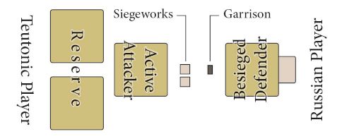
Storm Array: Teutons are Storming a Russian Lord who is Besieged
in a Fort (Capacity 1).
CONCEDE? At the start of each Round, the Attacker (only) may end the Storm then. The Attacker loses. Go to Ending the Storm below.
REPOSITION: Unlike in Battle, in each Round after the first, Attacker then Defender may switch positions between their Front and any Reserve Lord.
STRONGHOLD EFFECTS:
- The Besieged side receives the Garrison units shown for that type of Stronghold on the Strongholds table (one-to-three Men-at-Arms units and sometimes a Knights unit).
- The Besieged side uses that Stronghold's Walls (4.4.2 and the Strongholds table).
- The Besieging side uses Siegeworks as its own Walls (see below).
- All Defending units Melee Strike before any Attacking units do, unlike Battle in which Horse Melee precedes Foot (4.4.2, see the Battle and Storm chart).
- The Attacking side must absorb Hits with any Armored units before doing so with other units.
- Each Lord of each side in Storm adds no more than six Hits in Melee. (Archery is unlimited.)
GARRISONS: Certain added units as shown on the Strongholds chart help Defend during Storm.
GARRISON FORCES DURING STORM:
- Garrison Men-at-Arms (not Knights) have both Melee and Archery. Enemy Armor Protection is -2 against their Archery Hits (as if with a Crossbowmen Capability).
- Garrisons add their Strikes to those of the Defending Lord (rounding up), if any, but do not otherwise affect the Lord's Strikes. Garrisons are separate from any Defending Lord and ignore cards affecting that Lord individually. EXAMPLES: A Besieged Teutonic Lord's units get Archery only via a Balistarii Capability card; his Halbbrüder would not affect Garrison Armor.
- The Defender must assign all Hits suffered to Garrison units until they are Routed, after which Defending Front Lord's units absorb Hits.
- Whenever Routed and at the end of the Storm, return Garrison units to the pool.
- The full complement of Garrison units Defend in each enemy Storm action, regardless of what may have happened in previous Storm actions.
SIEGEWORKS: The Besieging side places all Siege markers at the Locale in front of its Attacking Lord(s). Those Lords during the Storm have Walls with value equal to the number of Siege markers against both Archery and Melee Strikes.
EXAMPLE: Lords Storming with three Siege markers would benefit from Walls 1-3.
ENDING THE STORM: A Storm ends once the number of Rounds completed equals the number of Siege markers there, or earlier if a side loses because all its Forces there Rout or the Attacker Concedes.
- Unless the Defenders all Routed, the Attackers lose. Losing Attackers neither Retreat nor give up Spoils. Presuming that Attackers survive, the Locale remains Besieged—return the Siege markers to the map and go to Aftermath (4.4.5).
- If the Defenders lose, the Stronghold is Sacked as below.
- Both sides' Forces take Losses per Battle (4.4.4), except that Routed Defending units always roll against Protection and Routed Attacking units that fail to roll a "1" are removed.
- Mark all Lords there as Moved/Fought, even Lords who remained in Reserve. NOTE: Lords at a Storm Locale may not simply sit it out. Whether used or not, they were available for action and will end up marked Moved/Fought.
SACK: When Besieged Defenders lose a Storm—
- Permanently remove all losing Lords (1.5.1) and award Spoils from them (all of their Assets except Ships, 4.4.3).
- The Besiegers Conquer the Stronghold. Place or remove Conquered markers (1.3.1) and adjust the appropriate VP marker on the Calendar (2.2.5, 5.1). Remove Siege markers.
-
Award Spoils from the Stronghold. The Besiegers receive and
distribute as desired among their Lords' mats a number of Loot,
Provender, and Coin each equal to the Stronghold's VP (1.3.1,
Strongholds table). If Teutonic Lords Sack Novgorod, also award
them all Veche Coin as Spoils (1.3.3).
EXAMPLE: Sacking a City yields two Loot, two Provender, and two Coin.
- Proceed with Aftermath (4.4.5).
4.5.3 Sally
A Besieged Lord may use a Command to Attack Besiegers in a Battle (4.4). All Besieged Lords there Attack; they do not receive any Walls or Garrison (4.5.2). The Defenders receive Siegeworks as if Storming (4.5.2). Losing Defenders Retreat normally, ending the Siege. Losing Attackers must Withdraw back into their Stronghold (4.4.3, not Retreat). NOTE: Besieged Lords when Active may only Sally or Pass (4.7.5).
RAID: If Sallying Attackers lose, remove all but one Siege marker at the Locale (reflecting damage to Siegeworks by the sortie.) The Siege goes on.
4.6 Supply
An Unbesieged Lord may use a Command action to add Provender to his mat from his Seats that are Supply Sources plus usable Ships if using a Seaport or Novgorod as a Supply Source.
4.6.1 Select Supply Sources
Possible Supply Sources include the Seat(s) of the Active Lord and—with Ships in Rasputitsa or Summer—a Seaport for Teutons or Novgorod for Russians. The Active Lord must have an unbroken Route of Locales and Ways, served by the appropriate Transport, to each Source (see below). As helpful, mark Locales with Supply Source markers.
NOTE: Archbishopric Novgorod and Ordensburgen Commanderies (1.3.1, 1.9.1) count as Seats, in addition to the Seats shown by Coats-of-Arms symbols.
4.6.2 Select Supply Routes
To use a Supply Source, the Active Lord must have a Route between his Locale and the Source. A Supply Route is an unbroken chain of Locales and Ways between the Active Lord and a Source, served by Transport.
- A Supply Route may not enter a Locale with the enemy's Lord, Stronghold, or Conquered marker unless the enemy is Besieged there.
TRANSPORT: To add Provender, the Active Lord must have or Share at least one usable Transport (1.7.4) per Provender for each intervening Way crossed (if any) along any Route to a Source. NOTE: A Lord at a Supply Source would not need Transport to have a Route to that Source.
SHARING: Lords at the Active Lord's Locale can Share their Transport (1.5.2) for Supply Routes and may Share Ships to add Provender via a Seaport for Teutons or via Novgorod for Russians (4.6.3).
4.6.3 Add Provender
The Active Lord receives one Provender for each of up to two of his Seats serving as Supply Sources with Routes to them. In addition, he gains one Provender for each of up to two usable Ships if he has a route to Novgorod (for the Russians) or to a Seaport (for the Teutons) as a Supply Source. The Lord may add less Provender than entitled, if desired.
NOTE: A Lord may have at most eight Provender (1.7.3). During Winter, only Seats provide Supply, because Ships are not usable (1.7.4)
4.7 Other Commands
4.7.1 Forage

An Unbesieged Lord in a Locale that is not Ravaged (4.7.2) may use a Command action to add one Provender to his mat provided:
- He is at a Friendly Stronghold, OR
- It is Summer (not Winter or Rasputitsa).
4.7.2 Ravage
An Unbesieged Lord may use a Command action at a Locale in enemy territory (1.3.1) that is not Conquered or Friendly and not yet Ravaged to place a Ravaged ½VP marker there, white if Russian Lord, black if Teutonic Lord. Adjust VP (2.2.5, 5.1).
- Ravage requires two Command actions if an Unbesieged enemy Lord is adjacent to the Locale.
- Add one Provender to the Ravaging Lord's mat; if the Locale is any type other than Region (a Stronghold, Town, or Trade Route), add one Loot also.
4.7.3 Sail
An Unbesieged Lord at a Seaport (1.3.1) during Rasputitsa or Summer—not in Winter—may use all actions of his Command card to move directly to any other Seaport that is free of Unbesieged enemy Lords. He or his moving group must have enough Ships, including by Sharing (1.5.2). Marshals may take along other Lords (4.3.1); Lieutenants must take Lower Lords (4.1.3); and Teutonic Lords may take the Legate (1.4.1).
- Teutonic Lords must have at least one Ship per Horse unit (1.6) to Sail.
- Russian Lords must have at least two Ships per Horse unit to Sail.
- In addition, Sailing Lords must have at least one Ship per Provender and two Ships per Loot.
SIEGE: If Sailing to an Unbesieged enemy Stronghold, place a Siege marker.
MOVED/FOUGHT: Mark all Sailing Lords Moved/Fought.
4.7.4 Tax
An Unbesieged Lord at his Seat may use all actions of his Command card to add one Coin to his mat.
4.7.5 Pass
A Lord may opt to Pass (do nothing) instead of using any or all of his actions.
4.8 Feed/Pay/Disband
At the end of each Command card, those Lords on BOTH sides marked Moved/Fought (because they were involved in March, Avoid Battle, Battle, Siege, Storm, or Sail) must Feed their Forces. Then all Lords on both sides may receive Pay and might Disband.
4.8.1 Feed
Each Lord marked Moved/Fought (Teutons then Russians) must remove Provender or Loot markers—one for a Lord who has up to six unit pieces on his mat, or two for a Lord with seven or more. Feeding may remove no Assets in excess of this requirement (1.7.2). NOTE: Loot can only Pay Lords at Friendly Locales (3.2.2) but can Feed them anywhere.
SHARING: First, all Lords must Feed their own Forces, using Provender and Loot from their own mats. Then, a Lord must expend Provender and Loot to Feed the Forces of his side's other Lords in the same Locale who have expended all of their Provender and Loot but did not have enough to Feed their own Forces (1.5.2). Players may not withhold Provender or Loot; they must use all Provender and Loot as able to meet Feeding needs, even if those needs end up only partially met.
UNFED: Shift the Service marker for any Lord that received less Provender or Loot than required above (and if using the advanced rule, those of his Vassals) one 40-Days box left. A Lord requiring two Provender or Loot but with access to only one consumes the one Asset AND suffers the Unfed penalty.
4.8.2 Pay and Disband
Next, any Teutonic then Russian Lords may receive Pay as per Levy (3.2). Then all Lords on both sides must check for Disband per their Service limit (3.3).
4.8.3 Remove Markers
Remove Moved/Fought markers from all Lords and proceed with the next Command card of the other side, if any.
4.9 End Campaign
After revealing all Command cards in both sides' Plan stacks, end this 40 Days.4.9.1 Grow
First, if turn 8 or 16 (end of each Rasputitsa), Teutons then Russians remove enemy Ravaged markers down to half their number, rounded up.
4.9.2 Game End
If the just-concluded Campaign was part of the scenario's final 40 Days, the game ends: highest VP wins (5.3). Otherwise proceed.
4.9.3 Plow and Reap
At the end of the final 40 Days of Summer (Early Winter is next), all Lords must flip all their Carts to Sleds; at the end of Late Winter (Rasputitsa is next), instead flip all Sleds to Carts. Each Lord then must discard Sleds or Carts until reduced to one half their original number by Lord, rounding up. EXAMPLE: A Lord with five Carts and no Sleds at Summer's end would take three Sleds into Winter.
4.9.4 Wastage
The Teutons player then the Russian player must select and discard any one Asset or "This Lord" Capability card from each of their Mustered Lords who has more than one of any type of Asset or more than one such card. NOTE: Wastage is by Lord only; it does not affect the Veche box or any cards other than This Lord Capabilities.
EXAMPLE: A Lord with two Boats, one Provender, and one card at his mat must discard one item because of the two Boats; the owning player could choose to discard a Boat, the Provender, or the card.
4.9.5 Reset
Prepare for the next 40 Days:
- Unstack any Lieutenants and Lower Lords (4.1.3).
- Remove all Serfs from Russian mats (even if Besieged) to the smerdi card.
- Discard all "This Campaign" Events (3.1.3).
- The Teutons player then the Russian may discard any Arts of War cards desired to their decks.
- Advance the Campaign marker to the next 40-Days box and flip the marker to Levy (2.2.2). If the new 40 Days is the new year's first Late Winter 40 Days, discard the Crusade card if in play and Disband Summer Crusaders (3.4.2).
5.0 VICTORY
A side may win an immediate victory during play. Otherwise, determine victory at the scenario's end.
5.1 Earning Victory Points
Track victory points (VP) on the Calendar (2.2.5). Sides earn VP as follows:
- 1 VP for each of its Conquered markers (1.3.1, 1.8, 4.5.1) on the map (including those in the Veche box, 3.4.2).
- 1 VP per Castle marker in its color on the map (1.8, 1.9.1).
- ½ VP for each of its Ravaged markers (1.8, 4.7.2) on the map.
- In the Pleskau-1240 scenario, 1 VP per enemy Lord removed from the map in any way.
5.2 Campaign Victory
If at any moment during Campaign (4.0) a side has no Mustered Lords on the map, the game ends immediately—the other side wins regardless of VP.
5.3 End of Scenario Victory
If neither side has won by the end of the final Campaign of a scenario, the side with the higher VP tally wins; if tied, the sides draw.
6.0 SCENARIOS
Agree on whether to use the Hidden Mats option (1.5.2), the optional unit counters (1.6), the advanced Vassal Service rule (3.4.2), bidding, and/or the No Horseback Archery variant (below). Set up the table layout per 2.1, then choose and set up a scenario from the following pages.
MAP AND CALENDAR: Place markers and cylinders as listed.
LORD MATS: Set out Mustered Lords' mats as if just Levied (3.4.1), with their starting Forces, Assets, and Vassal markers.
- Each player (Teutonic then Russian) selects any Transport for mats that show "any" or any but Ships if "no Ship". NOTE: Some Lords begin with a certain number of Ships.
- Vassals other than Special Vassals (3.4.2) are available and Ready—put their Service markers (Coat of Arms up) onto their Lords' mats.
BEGIN PLAY: Commence the first Levy by shuffling each side's Arts of War decks and drawing random Capabilities (3.1.1-3.1.2).
BIDDING FOR SIDES: If preferred for balance, after choosing a scenario but before assigning sides, bid to play the Russians. Players each put zero, one, or more dice under a cupped hand. Reveal simultaneously: total pips showing is the bid. The player with the lower bid takes the Russians and adds 1VP markers equal in number to that bid to the Veche box (adjust Victory). If bids tied, add that number of 1VP markers and assign sides randomly.
Pleskau - 1240
Frontier bishop Hermann von Buxhövden spurs a Latin lunge at the "schismatics" of Novgorod.
Seasons: This is a short scenario (two 40-Day periods only), with the Teutons on the offensive. Play from the first Levy of Summer 1240 (40-Days box 1) through the end of that Summer.
Markers on Map: None.
Mustered: Begin with these Lords on the map.
Teutons—
- Hermann (Marshal) at Dorpat
- Knud & Abel at Reval
- Yaroslav at Odenpäh
Russians—
- Gavrilo at Pskov
- Vladislav at Neva
Veche: One white 1VP Conquered marker.
Calendar:
- Box 1 has white Victory marker, Levy marker, and Rudolf and Domash cylinders.
- Box 2 has Yaroslav Service.
- Box 3 has Knud & Abel and Vladislav Service.
- Box 4 has Hermann and Gavrilo Service.
Remove from Play: Cylinders, mats, and Service markers of all other Lords. Also, remove each side's three "No Event" Arts of War cards from their decks.
Victory: Earn 1VP each time an enemy Lord Disbands or is removed. Record each on the Calendar with round markers provided.
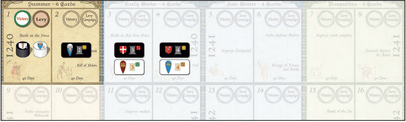
"Pleskau" Calendar setup and scenario span.
Watland - 1241
Following Hermann's success at Pskov, the Teutons agree on a plan to conquer another people under Novgorod's sway—the still mostly pagan Vodians.
Seasons: This is a mid-length scenario (up to five 40-Day periods) with the Teutons again driving into Rus. Play second Levy of Early Winter 1240 (40-Days box 4) through end of Rasputitsa 1241.
Markers on Map:
- Black Conquered marker at Izborsk.
- Two black Conquered markers at Pskov.
- Black Ravaged markers at Pskov and Dubrovno.
Mustered:
Teutons—
- Andreas at Fellin
- Knud & Abel at Wesenberg
- Yaroslav at Pskov
Russians—
- Domash at Novgorod
- Vladislav at Ladoga
Veche: One white 1VP Conquered, Coin x1.
Calendar:
- Box 1 has white Victory.
- Box 4 has black Victory, Levy, and Heinrich, Rudolf, and Karelians cylinders.
- Box 5 has Andrey cylinder and Yaroslav Service..
- Box 6 has Knud & Abel and Vladislav Service.
- Box 7 has Aleksandr cylinder and Andreas and Domash Service.
- Box 8 has Hermann cylinder.
Remove from Play: Gavrilo cylinder, mat, and Service markers. (He fell in Summer 1240.)
Victory: To win at scenario end (5.3), the Teutons must have at least 7 VP and must at least double Russian VP. (There is no tie.)

"Watland" Calendar setup and scenario span.
Return of the Prince - 1241 to 1242
With the Teutons settling into Rus and their raids almost reaching the great city, Novgorodans and the Grand Prince at last see eye-to-eye on a response.
Seasons: This is a longer scenario (eight 40-Day periods)—the Russian counter-campaign to the Teutonic invasion. Play from Summer 1241 (40-Days box 9) through end of Rasputitsa 1242.
Markers on Map:
- Black Conquered markers at Kaibolovo and Koporye and black Castle marker at Koporye.
- Black Conquered marker at Izborsk.
- Two black Conquered markers at Pskov.
- Black Ravaged markers at Vod, Zheltsy, Tesovo, Sablia, Pskov, and Dubrovno.
Mustered:
Teutons—
- Andreas at Koporye
Russians—
- Aleksandr at Novgorod
Veche: Three white 1VP Conquered, Coin x2.
Calendar:
- Box 3 has white Victory.
- Box 9 has black Victory, Levy, and Hermann, Rudolf, Yaroslav, Andrey, Gavrilo, and Karelians cylinders.
- Box 10 has Vladislav cylinder.
- Box 11 has Heinrich, Knud & Abel, and Domash cylinders.
- Box 12 has Andreas Service.
- Box 14 has Aleksandr Service.
NOTE: Gavrilo fell in Summer 1240 but here represents a potential rallying of pro-Aleksandr Pskovans.
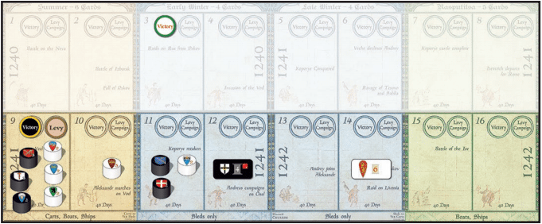
"Return of the Prince" Calendar setup and span.
Return of the Prince - Nicolle Variant
In contrast to the Novgorod Chronicle, David Nicolle in Lake Peipus 1242 (Osprey) dates the Teutonic assault on Pskov to 1241 rather than 1240, with the Teutons pressing south of Lake Chud while Aleksandr counterattacks in the north.
Seasons: This is another longer scenario (up to eight 40-Day periods)—a different interpretation of the timing of the Teutonic invasions. Begin with Levy of Summer 1241 (40-Days box 9) and play through the end of Rasputitsa 1242.
Markers on Map:
- Black Conquered markers at Kaibolovo and Koporye and black Castle marker at Koporye.
- Black Ravaged markers at Vod, Zheltsy, Tesovo, and Sablia.
Mustered:
Teutons—
- Andreas at Riga
- Hermann at Dorpat
- Knud & Abel at Koporye
Russians—
- Aleksandr at Novgorod
- Gavrilo at Pskov
Veche: Three white 1VP Conquered, Coin x2.
Calendar:
- Box 3 has white Victory.
- Box 5 has black Victory.
- Box 9 has Levy and Rudolf, Yaroslav, Andrey, and Karelians cylinders.
- Box 10 has Vladislav cylinder.
- Box 11 has Heinrich and Domash cylinders and Knud & Abel Service.
- Box 12 has Andreas, Hermann, and Gavrilo Service.
- Box 14 has Aleksandr Service.
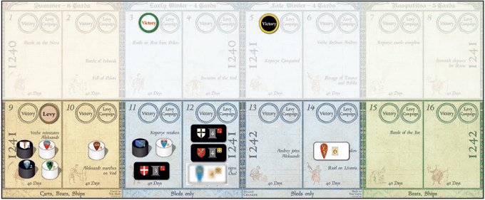
"Nicolle Variant" Calendar setup and span.
Peipus - 1242
Rather than pressing the Danes westward from his reconquest of Koporye, Aleksandr bolsters his army to liberate Pskov and wreak revenge on Dorpat.
Seasons: This is a mid-length scenario (up to four 40-Day periods) with the Russians on the offensive. Begin with the first Levy of Late Winter 1242 (40-Days 13) and play through end of Rasputitsa 1242.
Markers on Map:
- White Castle marker at Koporye.
- Black Conquered marker at Izborsk.
- Two black Conquered markers at Pskov.
- Black Ravaged markers at Vod, Zheltsy, Tesovo, Sablia, Pskov, and Dubrovno.
Mustered:
Teutons—
- Hermann (Marshal) at Dorpat
- Yaroslav at Pskov
- Aleksandr
- Andrey
- Domash
- Karelians
Veche: Four white 1VP Conquered, Coin x3.
Calendar:
- Box 5 has white Victory.
- Box 6 has black Victory.
- Box 13 has Levy and Heinrich, Knud & Abel, Rudolf, and Gavrilo cylinders. (Gavrilo here represents rallied pro-Aleksandr Pskovans.)
- Box 14 has Yaroslav and Karelians Service.
- Box 15 has Vladislav cylinder.
- Box 16 has Hermann, Aleksandr, Andrey, and Domash Service.
Remove from Play: Andreas cylinder, mat, and Service markers. (Andreas departed the Russian campaign in 1241.)
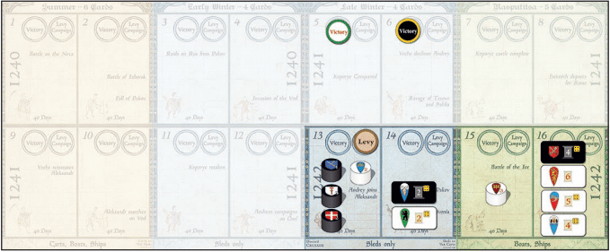
"Peipus" Calendar setup and scenario span.
Crusade on Novgorod - 1240 to 1242
With Aleksandr's repulse of the Swedes, the Veche feels safe to dismiss its Prince and let Novgorod see to its own defense. But over the lakes, reconciled Teutonic knights and Danes now eye Rus as a prize.
Seasons: This is the full-length scenario—the German and Danish invasions and Nevsky's riposte. Begin with Levy of Summer 1240 (40-Days box 1) and play through end of Rasputitsa 1242 (up to sixteen 40-Day periods).
Markers on Map: None.
Mustered:
Teutons—
- Hermann (Marshal) at Dorpat
- Knud & Abel at Reval
- Yaroslav at Odenpäh
Russians—
- Gavrilo at Pskov
- Vladislav at Neva
Veche: One white 1VP Conquered marker.
Calendar:
- Box 1 has white Victory, Levy, and Andreas, Heinrich, Rudolf, and Domash cylinders.
- Box 2 has Yaroslav Service.
- Box 3 has Andreas and Karelians cylinder and Knud & Abel and Vladislav Service.
- Box 4 has Hermann and Gavrilo Service.
- Box 5 has Aleksandr and Andrey cylinders.
Arts of War: Do not remove "No Event/No Capability" cards (3.1.2-3).
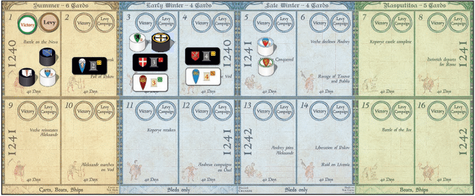
"Crusade on Novgorod" Calendar setup and span.
KEY TERMS AND INDEX
- 40-Days
- Calendar box, a turn (1.3.2).
- Active
- Acting on Campaign (4.0)
- Adjacent
- Linked by a Way (1.3.1).
- Approach
- March to enemy (4.3.4).
- Archbishopric
- Seat by Event (1.3.1).
- Archery
- Strike type (4.4.2).
- Armor
- Unit Protection roll (4.4.2).
- Array
- Lords in Battle or Storm (4.4.1).
- Arts of War
- card, deck (1.9.1, 3.1).
- Asiatic Horse
- Forces type (1.6).
- Asset
- Coin, Loot, Provender, Transport (1.7).
- Attack
- Engage in Battle or Storm as the Active side (4.4, 4.5.2).
- Avoid Battle
- Back off from enemy Approach (4.3.4).
- Battle
- Fight due to March (4.4).
- Battle mat
- Array option (4.4.1).
- Besieged
- Under Siege (4.3.5).
- Bishopric
- Stronghold type (1.3.1).
- Boat
- Transport type (1.7.4).
- Calendar
- Board section tracking turns, Service, and victory (1.3.2, 2.2).
- Call to Arms
- Part of Levy (3.5).
- Campaign
- Phase of each 40 Days (4.0).
- Capability
- Card aspect (1.9.1, 3.4.4).
- Capacity
- Stronghold aspect (1.3.1).
- Cart
- Transport type (1.7.4).
- Castle
- Stronghold type (1.3.1).
- City
- Stronghold type (1.3.1).
- Coat of Arms
- Lord's symbol (1.5.1).
- Coin
- Asset type (1.7).
- Command
- Rating (1.5.3); card (1.9.2); Activation (4.2); actions (4.3-.7).
- Commandery
- Seat by Capability (1.3.1, 1.9.1).
- Concede the Field
- Declare end to Battle as loser (4.4.2)
- Conquerable
- Locale aspect (1.3.1).
- Conquered
- VP marker (1.3.1, 5.1).
- Crossbowmen
- Archers with advantage versus Armor (1.9.1, 4.5.2).
- Cylinder
- A Lord's piece (1.5.1).
- Defend
- Face an Attack (4.4, 4.5.2).
- Disband
- Remove Lord from map (3.3).
- Encamp
- End Command actions with start of Siege (4.3.5).
- Endanger
- Remove Legate (1.4.1).
- Evade
- Unit Protection roll (4.4.2).
- Event
- Arts of War card aspect (1.9.1).
- Fealty
- Lord rating (1.5.3).
- Feed
- Eat after Marched/Fought (4.8.1).
- Flank
- Fight non-opposite (4.4.2).
- Foot
- Forces category (1.6).
- Forage
- Command action (4.7.1).
- Forces
- Foot and Horse units (1.6).
- Fort
- Stronghold type (1.3.1).
- Friendly
- Aspect of a Locale (1.3.1).
- Front
- Forward Array row (4.4.1).
- Garrison
- Storm Defense units (4.5.2).
- Greed
- Discard restriction (1.7.2, 3.1.4).
- Higher Authority
- Legate, Veche (1.4).
- Hit
- Battle effect harming a unit (4.4.2).
- Hold/Held
- Event type (1.9.1).
- Horse
- Forces category (1.6).
- Initiative
- Strike order (4.4.2).
- Knights
- Horse Forces type (1.6).
- Laden
- Slowed by Assets (4.3.2).
- Legate
- Higher Authority, purple pawn piece (1.4.1, 3.5.1).
- Levy
- Phase of each 40 Days (3.0); bring into play (3.4-3.5).
- Lieutenant
- Lord temporarily leading another Lord (4.1.3).
- Light Horse
- Forces type (1.6).
- Locale
- Map space (1.3.1).
- Loot
- Asset type (1.7).
- Lord
- Military Leader (1.5.1).
- Lordship
- Lord rating (1.5.3).
- Loss
- Unit removal in combat (4.4.4).
- Lower Lord
- Led by Lieutenant (4.1.3).
- Map
- Section of game board (1.3.1).
- March
- Command type (4.3).
- Marshal
- Lord leading Lords (1.5.1).
- Mat
- Display for Lord, Array (1.5, 4.4.1)
- Men-at-Arms
- Foot Forces type (1.6).
- Militia
- Foot Forces type (1.6).
- Moved/Fought
- marker (4.3, 4.4, 4.8).
- Muster
- Segment of Levy (3.4); enter play (3.4-3.5).
- Novgorod
- Stronghold type (1.3.1).
- On Map
- In play at a Locale (1.3.1) or in the Veche box (1.3.3).
- Pass
- Command card (1.9.2, 4.2.3); Command action (4.7.5).
- Pay
- Expend Coin or Loot (3.2.1-.2).
- Plan
- Stack of Command cards (4.1).
- Protection
- Saving roll (4.4.2).
- Provender
- Asset type (1.7).
- Pursuit
- Battle advantage (4.4.2).
- Raid
- Siege reduction by Sally (4.5.3).
- Rasputitsa
- A Season (2.2.1).
- Ravage
- Command action (4.7.2).
- Ready
- Able to Muster (3.4.1-.2).
- Rearguard
- Relief Sally position (4.4.1).
- Recovery
- End to Command actions in aftermath of Battle or Storm (4.4.5).
- Region
- Locale type (1.3.1).
- Relief Sally
- Besieged Lords joining an Attack from outside Approach (4.4.1).
- Reposition
- Move in Array (4.4.2, 4.5.2).
- Reserve
- Array back row (4.4.1, 4.5.2).
- Retreat
- Forced out by Battle (4.4.3).
- Rout
- Battle harm to unit/Lord (4.4.2).
- Sack
- Obtain Spoils from Storm (4.5.2).
- Sail
- action to move to Seaport (4.7.3).
- Sally
- Besieged Attack (4.4.1, 4.5.3).
- Seaport
- Locale aspect (1.3.1).
- Season
- Pair of 40 Days (2.2.1).
- Seat
- Stronghold aspect (1.3.1).
- Serfs
- Forces type (1.6).
- Sergeants
- Horse Forces type (1.6).
- Service
- Lord/Vassal rating (1.5.3-.4); marker (1.5.1); advanced rule (3.4.2).
- Share
- Use Asset for other Lord (1.5.2).
- Ship
- Transport type (1.7.4).
- Siege
- Marker (4.3.5); action (4.5.1).
- Siege Capacity
- see Capacity (1.3.1).
- Siegeworks
- Besiegers' Walls (4.5.2).
- Sled
- Transport type (1.7.4).
- Source
- Supply origin (4.6).
- Special Vassal
- Vassal type (1.5.4).
- Spoils
- Battle/Storm gain (4.4.3, 4.5.2).
- Storm
- Command action (4.5.2).
- Strike
- Inflict Hits (4.4.2).
- Stronghold
- Locale type (1.3.1).
- Summer
- A Season (2.2.1).
- Supply
- Command action (4.6).
- Supply Route
- A chain of Locales and Ways with Transport (4.6.1).
- Supply Source
- A Locale providing Provender via Supply (4.6.1).
- Surrender
- Taken via Siege (4.5.1).
- Tax
- Command action (4.7.4).
- Terms
- No Spoils in Surrender (4.5.1).
- This Lord
- Capability type (3.4.4).
- Town
- Locale type (1.3.1).
- Trackway
- Overland Way (1.3.1).
- Trade Route
- Locale type (1.3.1).
- Transport
- Asset type (1.7.4).
- Unit
- Forces piece (1.6).
- Unarmored
- Unit Protection roll (4.4.2).
- Unready
- Unable to Muster (3.4.1-.2).
- Usable
- Transport when effective by Season and Way (1.7.4).
- Vassal
- Forces a Lord can Levy (1.5.4).
- Veche
- Higher Authority (1.4.2, 3.5.2).
- Walls
- Overall saving roll (4.5.2).
- Wastage
- Asset and VP marker limit (1.4.2, 1.7.3), Asset and Capability erosion (4.9.4).
- Waterway
- River or lakeshore (1.3.1).
- Way
- Link between Locales (1.3.1).
- Winter
- (Early, Late) a Season (2.2.1).
- Withdraw
- Enter Stronghold (4.3.4).